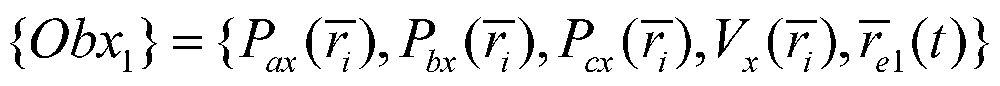
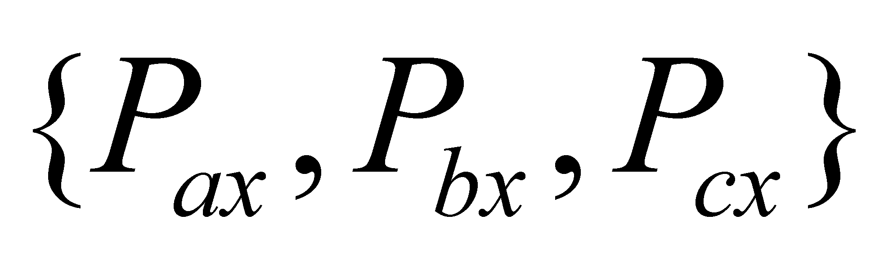
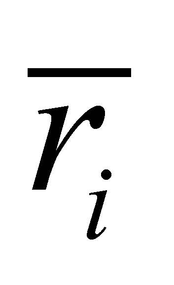
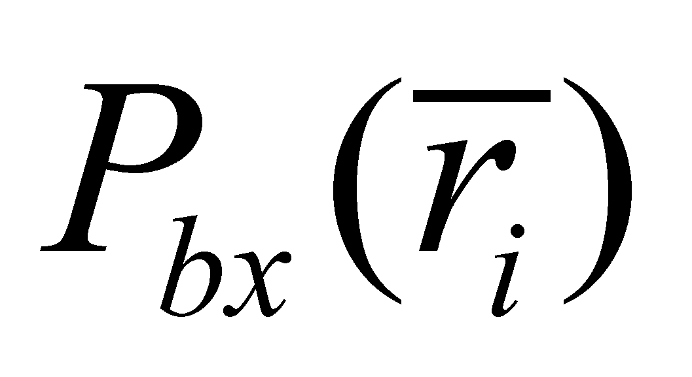
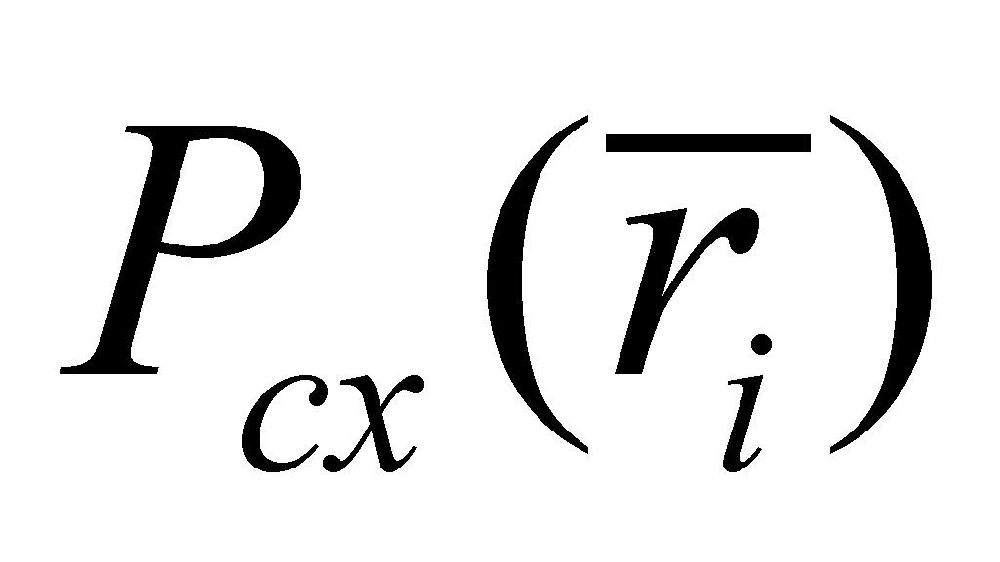
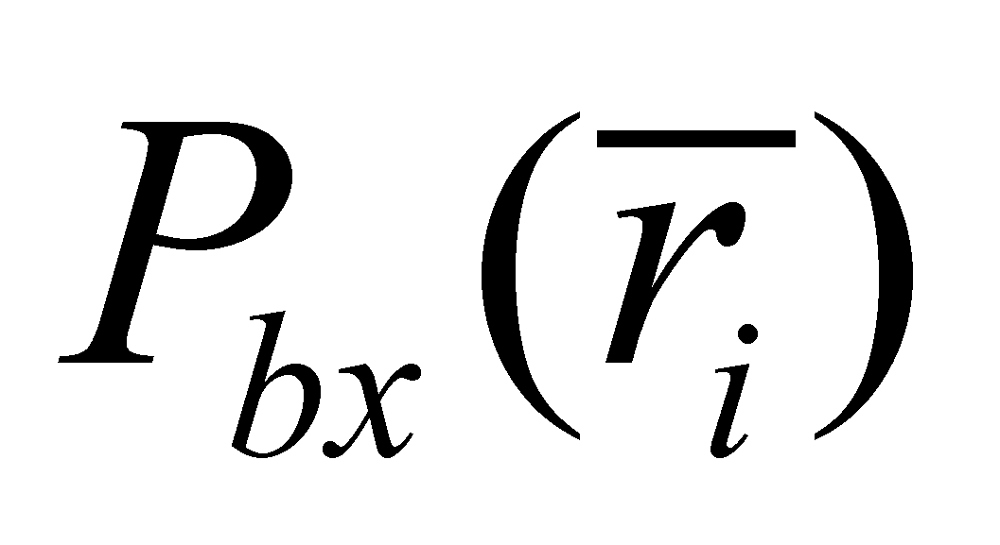
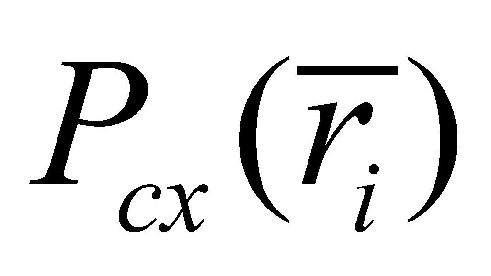
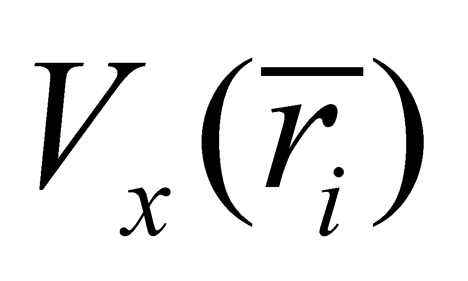
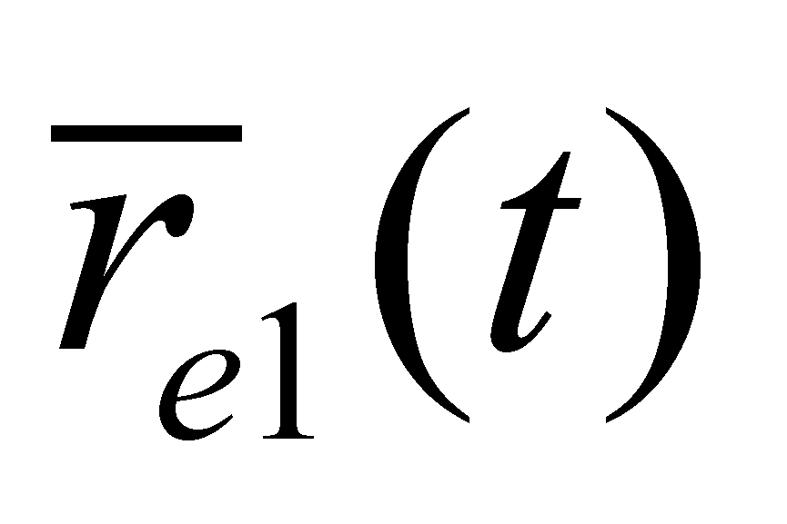

|
|
|
Let us assume that an external material object Obx1 from the direct individual reality of an IPS was detected with n direct (sensorial) qualitative properties. This fact means that the general property P1 (the properties set) belonging to the generic object model (defined in chapter 3) consists of n qualitative attributes72. These n properties are distributed (in case of the material objects) on a spatial domain occupied by the object, domain which represents the abstract support of all n distributions assigned on this internal domain. Therefore, the general property P2 (the common support attribute of all distributions) is the spatial position, and the sizes of the object’s internal spatial domain represents the property P4. The general property P3 (distribution type of each property within the set) is assessed by the input unit of IPS which is specialized in receiving that property. The assessment of P3 distributions is made both against the internal RS of IPS (the general property P5 of IPS) and against the internal RS of the object Obx1 (the general P5 property of that particular object), internal RS of IPS being the external reference for the object Obx1. All these components have a simultaneous existence at the moment t - general property P6 (see the annex X.16 for details concerning the perception of objects by IPS).
It is worth mentioning that the property P6 is an internal property of IPS, and that property is assigned to its internal representation from the internal ISS medium of IPS (a state of the external object which is found at the moment t into the memory IPS). In other words, all the general properties about which we have discussed so far, belong (are related) to this internal representation of an external object, representation which has the form of a specific structure (configuration) of the internal ISS.
Definition 9.2.2.1: The abstract object which is associated by IPS to an external object from the direct individual reality is named a concrete (synonym - sensorial) abstract object.
Comment 9.2.2.1: A concrete abstract object is the information contained in an internal ISS of an IPS, corresponding to the perception of an object from the direct individual reality (an external one, for instance) by an input unit. This object (internal ISS) has a finite exclusively spatial distribution (which, in case of an AIPS, is related to a continuous domain of memory locations), all the other external distributions (either frequential or temporal) being converted into spatial distributions. ISS which contains a concrete abstract object is stored (in case of NIPS) into the short-term memory (STM). Any real object perceived by an IPS has a representation (a substitute, an image) inside it (of IPS), namely, an internal ISS which must contain the information associated to the real object. However, not any abstract object (that is the information contained in an ISS) has a correspondent in the real world. For example, the abstract objects which are generated as a result of the information processing operations (which are abstract processes) do not always have a potential correspondent in the real world (which means that they are not materially realisable). The most relevant and simple example is represented by ISS which contains the result of the comparison between two real objects (difference, contrast). This abstract object cannot be related to any object from the real world. Adjoining to the possibility of representing a specific real object, an abstract object may also represent a set of real or abstract objects. The names, resultants, public authority, etc. are few worth-mentioning elements belonging to this category and some of them will be subsequently analysed.
The association of a concrete abstract object (a finite amount of internal sensorial information) to an external material object is the first step, the main stage of the abstraction process. Due to this reason, the sensorial abstract objects have the lowest abstraction level from the internal abstract objects, being fundamental abstract objects (with an unit abstraction level).
Comment 9.2.2.2: Attention! When we have dealt with the analytical level of the compound objects in chapter 3, we saw that the objects which cannot be decomposed any longer based on a certain criterion show an unit analytical level, which means that they are fundamental (or elementary) objects as regards that criterion. When we are dealing with fundamental abstract objects, these objects are fundamental (elementary) only as regards the abstraction level (they have an unit abstraction level).
Let us assume that the concrete abstract object Obx1 (the internal representation of an external material object for IPS) has the following structure:
 (9.2.2.1)
where:
 is the set of the sensorial properties (general property P1), determined by the input units A,B,C of IPS;
The common support attribute of all distributions (general property P2) is the spatial positiondetermined against the object’s internal reference system73 (general property P5);
 ,,
are the internal distribution types of these properties (general
property P3), the so-called sensorial distributions (analyzed in
annex X.18);
,,
are the internal distribution types of these properties (general
property P3), the so-called sensorial distributions (analyzed in
annex X.18);
 is the amount of the internal spatial domain of Obx1 (general property P4), also determined by IPS against the object’s internal reference;
Moment t of the simultaneous existence of all the general properties of Obx1 (general property P6);
 is the external spatial position of Obx1 (position of the internal RS of the object against an external RS, which can be an internal RS of IPS or a RS artificially built by IPS as well).
72 We are talking only about the invariant properties, namely, the objectual ones. Besides these invariant properties, the external objects can have other much more numerous set of processual properties, namely, those invariant properties of the processes in which the object’s attributes are variable.
73 The object’s reference system is also generated by IPS (by processing the information) based on the existence of the internal reference systems of the input units (sensory organs) and of the global reference system of IPS.
Copyright © 2006-2011 Aurel Rusu. All rights reserved.